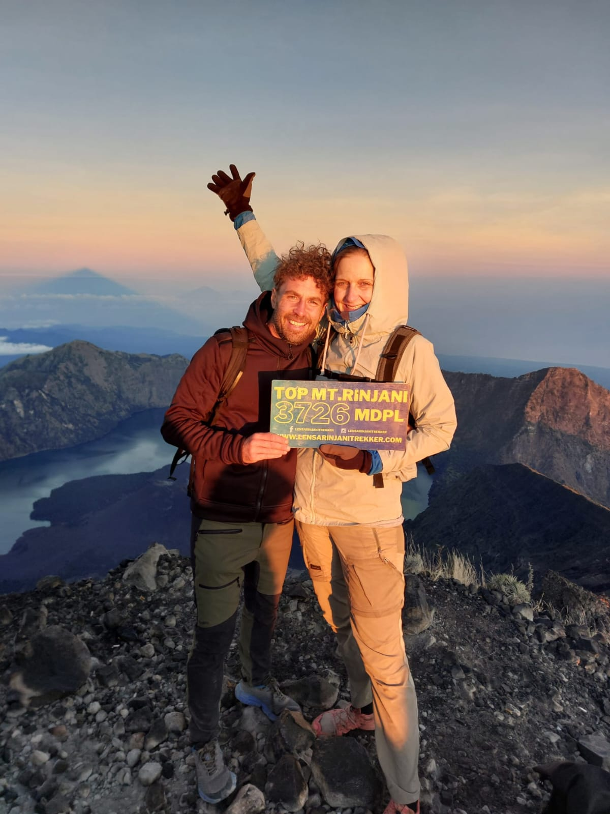

Package Overview
This iconic 3 Days 2 Nights trekking package combines the physical challenge of scaling Mount Rinjani's highest peak with the majestic, lush scenery of the Torean Valley. Starting from the savanna of Sembalun, you will hike up to the crater rim, challenge yourself for a sunrise summit push, descend into the volcano crater lake, and relax in volcanic hot springs.
Instead of returning via the same route, your trip finishes through Torean—known as Lombok's "Jurassic Park"—featuring towering vertical cliffs, Penimbungan Waterfall, cascading rivers, and tropical rainforests.

Official RTP Sembalun - Torean Trail Map
Select Your Trekking Style
Whether you prefer a friendly group atmosphere or total luxury comfort, we have you covered.
Sharing Group Tour
Join a group of international trekkers. Perfect for social solo travelers & couples.
Service Inclusions:
- Standard Homestay in Senaru pre-trek
- Shared Transport pick-up/drop-off across Lombok
- Double-layer tent, sleeping bag, standard mattress
- Shared Toilet Tent
- Experienced local mountain guide & porter crew
- 3 Fresh meals daily, snacks, coffee/tea & water
- National Park Ticket (IDR 250k/day) & Insurance
- Personal gear rental (Jackets, Trekking poles, Lamp)
VIP Private Deluxe Package
Uncompromised comfort, premium equipment, and exclusive personal team.
VIP Deluxe Exclusives:
- Deluxe AC Hotel stay in Senaru before trekking
- VIP Private AC Transport (Innova/Zenix) throughout Lombok
- Extra large tent, 8cm thick mattress, pillow, chairs & dining table
- Private Toilet Tent exclusively for your group
- Dedicated senior English guide & private porter crew
- Gourmet mountain dining menu & unlimited beverages
- FREE Hiking Gear Rental (Jacket, Trekking Pole, Headlamp, Raincoat)
- FREE Senaru Waterfall Tour & Speedboat Ticket to Gili Islands
Detailed Trekking Itinerary
See how your adventure unfolds step by step from Sembalun to Torean.
Sembalun Basecamp to Pelawangan Crater Rim


- Early morning pick up from hotel/airport & transfer to Sembalun village for registration & medical check.
- Hike through wide open grasslands with stunning views of the peak.
- Enjoy fresh cooked lunch at POS 2 or POS 3 prepared by porters.
- Ascend the steep "regret hills" reaching Sembalun Crater Rim (Pelawangan Sembalun, 2,639m).
- Enjoy sunset over the clouds, hearty dinner, and early rest for the midnight summit push.
Rinjani Summit (3,726m) & Camping at Segara Anak Lake


- 02:00 AM wake up call with warm tea/coffee and snacks before summit attack.
- Trek up loose volcanic ash under starry skies to reach Mt. Rinjani summit (3,726m) for a glorious sunrise over Lombok, Bali & Sumbawa.
- Descend back to Crater Rim camp for full breakfast.
- Continue descent into Segara Anak Crater Lake (2,000m).
- Arrive at lakeside camp. Relax, swim, and soak in natural volcanic thermal hot springs.
Segara Anak Lake to Torean Village via Torean Valley



- Breakfast by the calm morning lake before starting descent through Torean route.
- Hike through dramatic cliff edges, deep canyons, and view Penimbungan Waterfall.
- Enjoy lunch prepared by the river/jungle trail.
- Reach Torean village (~4:00 PM) where your private/shared driver awaits to drop you off at your hotel, airport, or harbor.
Frequently Asked Questions & Packing Tips
What should I pack for the hike?
- Small daypack (20-30L) for personal belongings
- Warm jacket & fleece (temperatures dropped to 5°C at peak)
- Trekking shoes with good ankle support & grip
- Headlamp, trekking pole, gloves & beanie (Free rental in VIP tier)
- Personal medication, sunblock & quick-dry clothes
Can I rent personal hiking gear?
Yes! If you choose the Sharing Package, warm jackets, trekking poles, headlamps, and shoes are available for rent at our Senaru basecamp. If you choose the VIP Private Package, all essential gear rental is already 100% included for FREE.